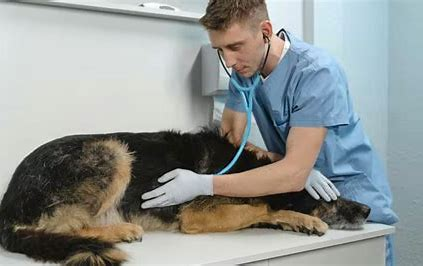
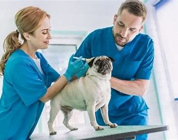

Nuestros Servicios
Consulta veterinaria general
Realizamos consultas veterinarias para el cuidado general de tu mascota.
Vacunación y desparasitación
Ofrecemos servicios de vacunación y desparasitación para mantener a tu mascota saludable.
Cirugía y hospitalización
Contamos con especialistas en cirugía veterinaria y ofrecemos servicios de hospitalización.
Estética canina y felina
Brindamos servicios de estética para mantener a tu mascota con un aspecto saludable y limpio.
Servicios de emergencia 24/7
Estamos disponibles las 24 horas del día para atender emergencias veterinarias.
Nuestros Veterinarios

Dr. Juan Pérez
Especialista en Cirugía Veterinaria con más de 15 años de experiencia.
Dra. María García
Especialista en Dermatología Veterinaria, experta en el cuidado de la piel y el pelaje.

Dr. Luis Sánchez
Cardiólogo Veterinario dedicado a la salud cardiovascular de las mascotas.